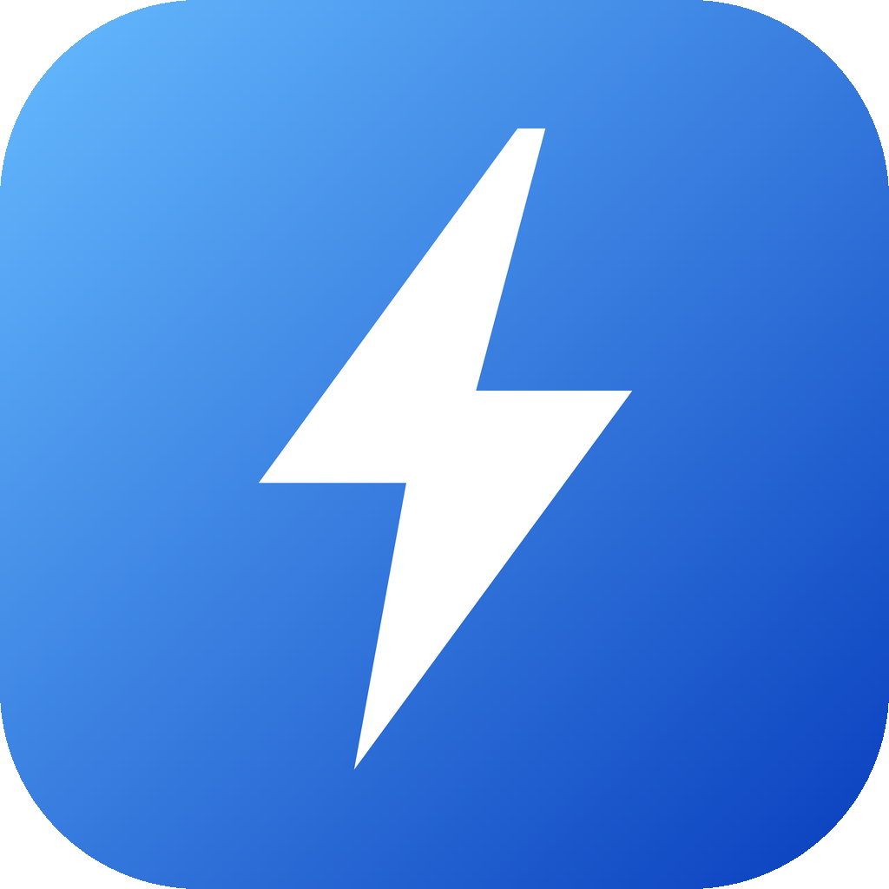
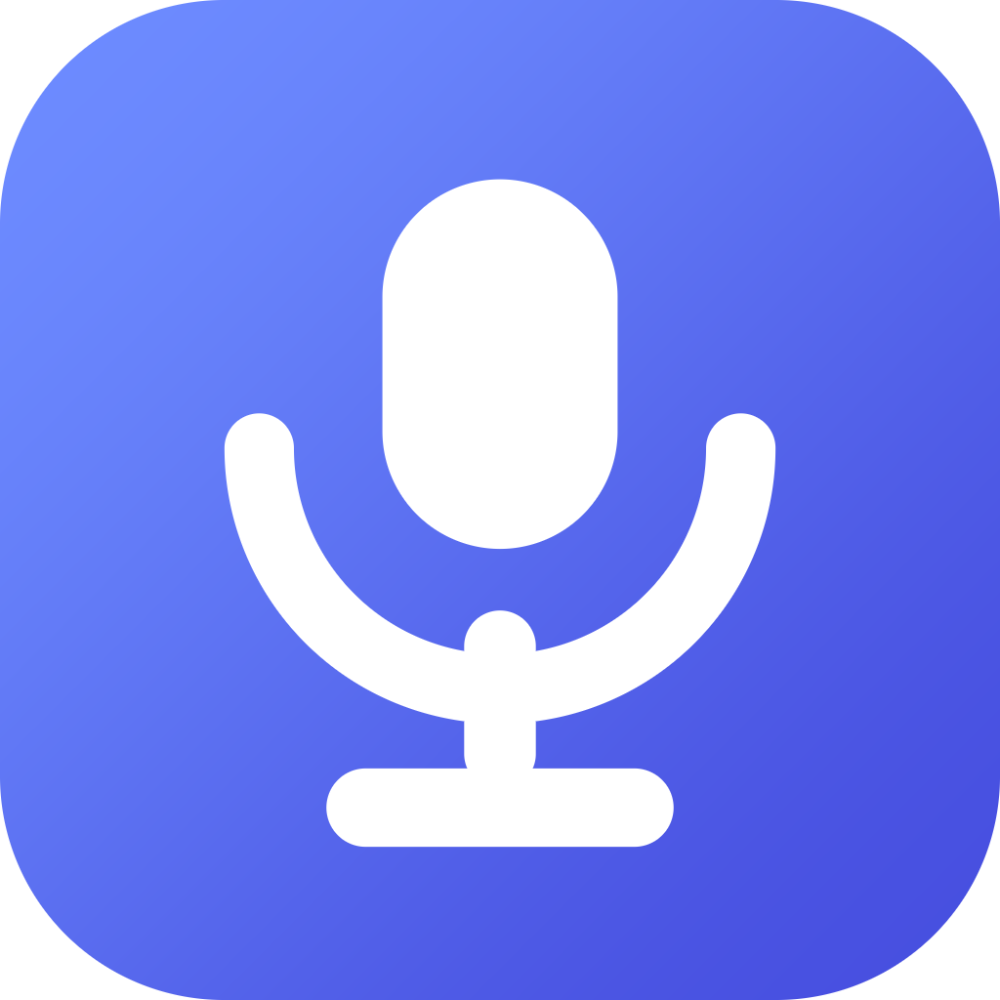

zhongxiaotian · Shanghai
Java 是工作，Rust 是生活。
工作里写业务系统的权限、数据与稳定性；生活里给自己造跑在本机的邮件、接口、RSS、日历与语音。 两种语言，两种复杂度：一种要被团队接住，一种要在编译期结账。
AI 把写代码的成本压下来之后，我把方向反过来了——先描述清楚自己这台机器上的一天，再让软件长成那个样子。 软件应该长成使用者的样子，而不是让人去适应软件。

原生邮件客户端，IMAP / SMTP / MIME 全部手写。5.4 MB 单二进制，3.6 万封邮件常驻 94 MB、空闲 0.3% CPU。
本地优先的接口调试客户端。工作区就是一堆能进 Git 的 YAML——没有账号，没有云同步，没有遥测。
为上千个源设计的 RSS / Atom / JSON Feed 阅读器。304 优先 + 自适应轮询，把刷新成本压到最低。

按住一个键说话，本地 whisper 转成文字，再交给本机 agent 干活。音频不出本机。